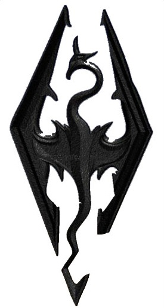
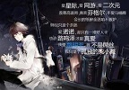
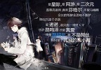
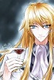
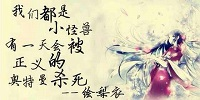
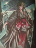

希尔伯特·让·昂热 卡塞尔学院校长,初代狮心会成员 血统S级 言灵：时间零 武器：炼金折刀
弗拉梅尔 卡塞尔学院副校长、炼金原理部部长，守夜人 血统S级 言灵：戒律
诺玛/EVA 学院秘书，人工智能
冯·施奈德 执行部部长，楚子航的导师 言灵、血统未知
古德里安教授 卡塞尔学院资深教授 诺诺幼时的监护人 路明非的导师和接引者
格尔德·鲁道夫·曼施坦因教授 风纪委员会主任，副校长“守夜人”之子 言灵：蛇
路明非 学生会现任主席 血统S级 言灵未知 与路鸣泽可能位为黑王双生子  

楚子航 狮心会前任会长 血统超A级 言灵：君焰 武器：村雨、蜘蛛切 童子切
恺撒·加图索 学生会前任主席、加图索家族继承人、校董会成员 血统A级 言灵：镰鼬 武器：沙漠之鹰 黑刃猎刀·狄克推多 
陈墨瞳 学生会组织部部长，会长恺撒的未婚妻 血统A级 言灵未知
零 曾经身份为黑天鹅港的38号雷娜塔·叶夫根妮娅·契切林娜 学生会成员 血统A级 言灵：镜瞳
芬格尔·冯·弗林斯 路明非室友，学生会新闻部前任主席 血统从A级降为G级 言灵未知
夏弥 真实身份为代表“四大元素”的四大龙王中的大地与山之王耶梦加得 血统A级 言灵：风王之瞳
路鸣泽 路明非灵视中的弟弟、老板 言灵：梦 可能与路明非一起为黑王尼德霍格
被赫尔佐格称作是“世界的终极”，是龙族史上仅有的三位可以改变他人血统的人之一。言灵能力为“梦”，拥有改变一切尚未成为“历史”
的事物的能力。自身即是纯血龙类而非混血种，其血统更是凌驾于初代种之上；现今已知的所有言灵全部对其无效，并且可以将其强行打断，真
实身份不明。
苏恩曦 绰号：薯片妞 路鸣泽手下 血液有抵消古龙血清的能力
酒德麻衣 路鸣泽手下 自幼接受忍者训练，专攻近身战。 言灵：冥照
零 曾经身份为黑天鹅港的38号雷娜塔·叶夫根妮娅·契切林娜 学生会成员 血统A级 言灵：镜瞳
上杉绘梨衣 喜欢路明非 蛇岐八家内三家的上杉家家主，前任影皇上杉越之女 言灵：审判 
源稚生 卡塞尔学院日本分部执行局局长，源家家主，蛇岐八家少主 言灵：王权 精通日本最纯正的古流刀术
源稚女 源稚生的弟弟 蛇岐八家这一代的三位影皇之一，猛鬼众的龙王 
荣格·冯·赫尔佐格 拥有多重身份 使用绘梨衣作为容器过滤了白王之血，赫尔佐格最终破茧，成为新一代的白王
黑王 尼德霍格 始祖
白王 伊邪那美 大祭司
四大君主
青铜与火之王 诺顿，康斯坦丁
大地与山之王 芬里厄，耶梦加得
天空与风之王
海洋与水之王